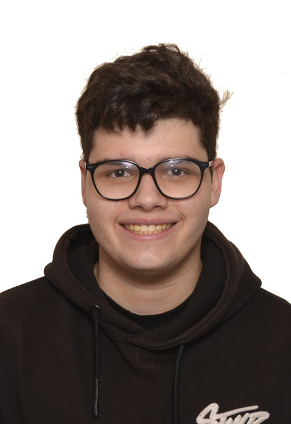

Iván Zugazaga Sánchez
Estudiante
- +34 659387655
- ivanzugazaga0@gmail.com
- España, Madrid
Acerca de mí
Estudiante sin experiencia laboral, con ganas de conseguir trabajo.
Educación y Preparación
| 01/09/2018 - 20/06/2022 | ESO - GSD MORATALAZ |
|---|---|
| 1/09/2022 - Actual | SMR - IES Villablanca |
Proyecto Académico
| 22/01/2025 - 16/02/2025 | Proyecto Académico con WordPress |
|---|---|
| 11/02/2025 - 26/02/2025 | Proyecto Académico con Moodle |